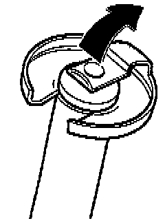

Shift Lever

COMPONENT NOTES AND INFORMATION
NOTE: Lubricate all mountings and contact surfaces with MoS2 grease.
1 Hex bolt
- Tighten to: 25 Nm (18 ft lb)
2 Hex bolt
- Tighten to: 25 Nm (18 ft lb)
3 Cover plate
4 Gate selector cable
- On gate selector bracket
5 Gear selector cable
- On gear selector lever
6 Spring clip
7 Hex combination bolt
- Pivot pin -8- to mounting plate
- Tighten to: 15 Nm (11 ft lb)
8 Pivot pin
9 Mounting plate
10 Circlip
11 Bushing
- Removing and installing, refer to Fig. 3, below.
- Fits in one position only
12 Gate selector bracket
13 Gate selector housing
- Fit into mounting plate after installing complete shift lever
14 Cap
- Assembling, refer to Fig. 1, below.
15 Bushing
- Fits in one position only
16 Spring
17 Guide bushing
- Assemble with bushing -15-
18 Bushing
19 Circlip
20 Sleeve
- Where applicable
21 Lock washer
- Removing and installing, refer to Fig. 2, below.
22 Spacer sleeve
23 Spring
24 Shift lever guide
25 Shift lever
26 Damping washer

Fig. 1 Installing gate selector housing cap
- Press on from side (-arrow-)
- Press together opening to form a slot
NOTE: Heat cap to soften if necessary (e.g. in hot water).

Fig. 2 Removing and installing lock washer
- Pull shift lever in direction of arrow -A- and simultaneously use screwdriver to push spacer bushing in direction of arrow -B- to stop
NOTE:
^ Do not tilt the spacer bushing when pushing down.
^ The holding slot in the shift lever for the lock washer must remain accessible.

Fig. 3 Removing circlip for selector bracket and shift lever guide/selector housing
- Lift clamp in direction of -arrow-.